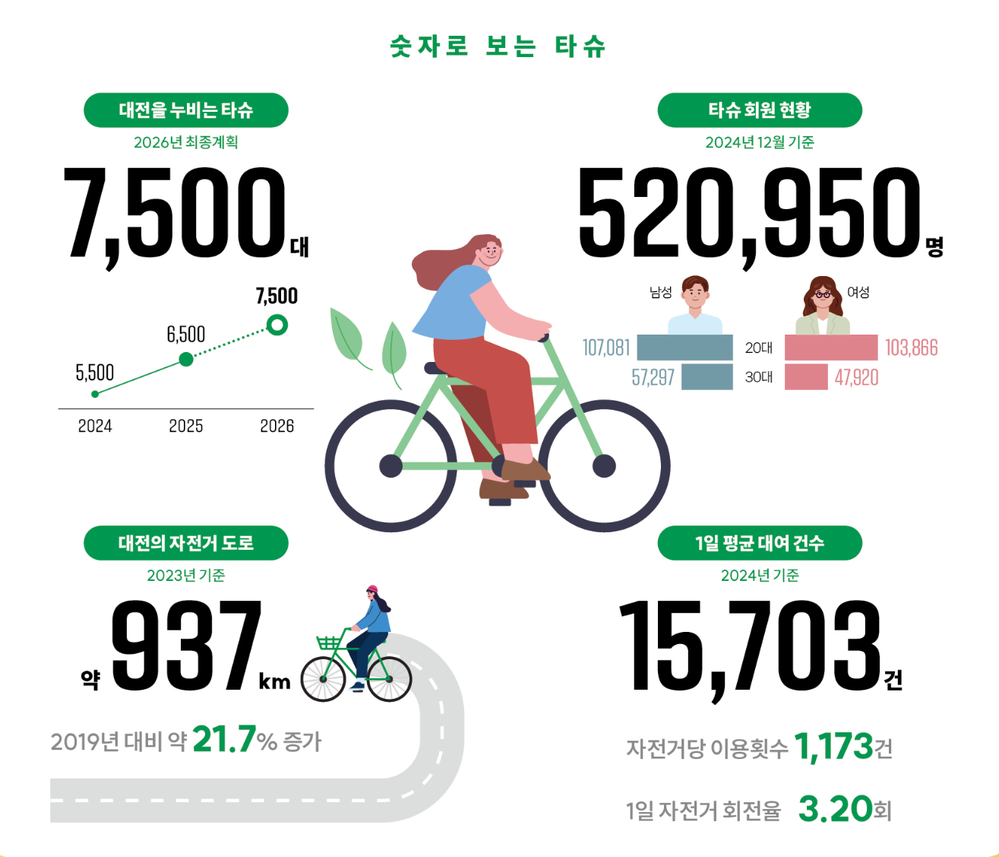

TA-CU
기획 의도 — 왜 타슈인가?
대전시 탄소 정책 현황
2025년부터 탄소 중립 정책 활발히 추진 중이나,
시민들의 정보 접근성은 여전히 낮음
시민 관점의 문제점
"탄소 중립은 어렵고 멀게 느껴진다"
정보가 흩어져 있어 실천 방법 습득이 어려움
해결 방향: 타슈(Tashu)
대전 시민들이 이미 이용하는 공공자전거를 진입점으로,
이용 데이터와 보상을 연결해
별도의 학습 없이도 탄소 중립 실천 유도

▲ 실제 개발된 타슈 대여소 지도 및 이용 화면
2